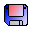
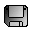
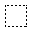
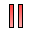

The purpose of each menu item is stated briefly here for reference purposes.
 | New Machine | - |
Creates a new machine window. |
 | Open Machine | - |
Load a previously created machine. |
|  | Save Machine | - |
Save the currently selected machine for later use. |
 | Save Machine As | - |
Save the currently selected machine under a new filename. |
 | New Tape | - |
Creates a new tape, discarding the old one. |
| | Open Tape | - |
Load a previously created tape. |
|  | Save Tape | - |
Save the tape for later use. |
| | Save Tape As | - |
Save the tape a new filename. |
 | Add States | - |
Select the user interface mode to add states. |
| | Add Transitions | - |
Select the user interface mode to add transitions. |
|  | Make Selection | - |
Select the user interface mode to select a set of states and transitions. |
 | Eraser | - |
Select the user interface mode to erase states and transitions. |
| | Choose Start States | - |
Select the user interface mode to choose start states (initial states). |
| | Choose Accepting States | - |
Select the user interface mode to choose accepting states (final states). |
 | Choose Next Transition | - |
Select the user interface mode to choose the next transition to be executed, when a
non-deterministic machine is paused and there is more than one acceptable transition
available from the current state. |
| | Choose Current State | - |
Select the user interface mode to choose the state that the machine is in. |
| | Step | - |
Step the machine one execution cycle. |
| | Execute | - |
Automatically execute the machine until it halts or is stopped by
the user. |
|  | Pause Execution | - |
Pause the execution of the machine. |
 | Stop Execution | - |
Stop the execution of the machine. |
| | Slow | - |
Set the execution speed to "Slow". |
| | Medium | - |
Set the execution speed to "Meduim". |
| | Fast | - |
Set the execution speed to "Fast". |
| | Super Fast | - |
Set the execution speed to "Super Fast" . |
| | Ultra Fast | - |
Set the execution speed to "Ultra Fast". |